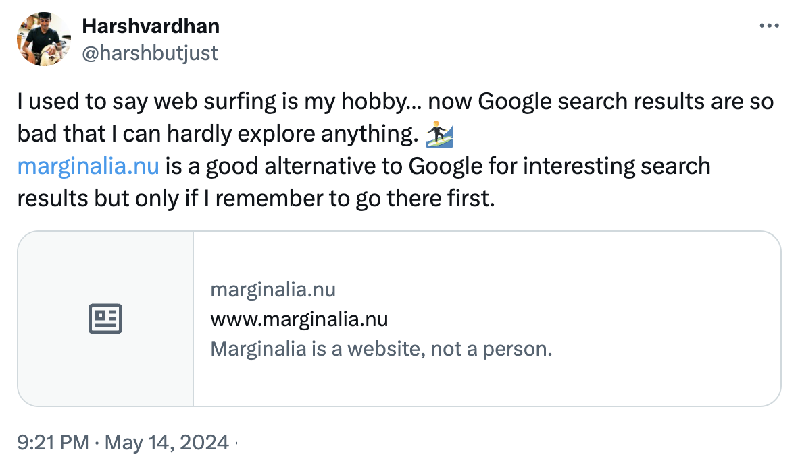

There are several reasons why I don’t enjoy it as much as the early days of internet but here are a few of my guesses:
Novelty Effect
First time exploring anything is fun simply due to the lack of knowledge about the subject. When I was faking my date of birth to be over 18 years to sign up for Orkut, was busy downloading random wallpapers from SantaBanta.com (which has degraded to explicit images now), getting Bollywood songs from songs.pk, I was doing things that were novel to me. I experienced excitement and heightened engagement when I encountered something new or unfamiliar. Now, most websites are somewhat familiar and this effect is gone.
Quality of internet is down
In the old days, I could open a website and browse most of its content without being asked to create an account, add my credit card, etc. Now, every site asks me to create an account to read on, some even ask credit card details. Much worse experience.
The ads used to be on the sides of the pages and popups (which were annoying af). But still, my mind would automatically ignore the ads and focus on the content. Today, I use AdBlockers so this is not much of an issue but when I do use a computer without AdBlocker, I’m surprised to see 2/5 results on Google are Ads, 3/5 “tweets” are ads, 2/5 posts on Reddit are ads.
How much more money do these capitalists want from me? Isn’t a good user experience worth something more than a few `$$$`?
I’ve relied too much on Google to be my window to the internet
Many. have. debated. what’s. wrong. with. search.
Some have even directly called out Prabhakar Raghavan, a computer scientist with management consultancy background, to be the core problem.
There is ample evidence that Google Search isn’t what it used to be. I understand search is a hard problem to solve — constantly avoiding SEO-optimized posts in favour of quality posts — but these days, I feel Google tries too hard to understand what I’m looking, instead of serving me what I ask.
There are several good alternatives to a search engine, but I need to remember to use them:
- Perplexity: A great alternative that presents the answer directly with footnote citations.
- Marginalia.nu: It shows me sites that I wouldn’t have seen otherwise at all. This is the only one that directly aids in exploration. (It also makes me wonder how can a search engine made by a single person be so good?)
- Exa.ai: A search engine that tries to “understand” the context around my keyword. This is what Google circa 2024 wants to be, though I don’t think this is a good North Star. However, the cool part of this tool is the ability to refine my search to PDFs, companies, research papers, tweets, and even personal websites.
- Gigabrain: A Reddit search engine that finds answers by searching only Reddit data. Long live “site:reddit.com”!
- udm14: When Google launched all the AI features including overviews recently, it also added a neat code for a much cleaner Google, as it used to be earlier. (Hat-tip to Meenal for suggesting these.)
I have hot keys set up in Arc for all of these site searches, which you can do that for most browsers, including Chrome.
Danluu.com compares search results from Google, Bing, Marginalia, Kagi, Mwmbl, and ChatGPT. A long but interesting read.
Tools have stagnated
I don’t think this is a big problem because browsers — the primary entrance to internet — have traditionally been terrible. Internet Explorer was slowww, Firefox was geeky, Chrome was heavy on memory and CPU, and none of them had really thought from scratch what a gateway to internet should feel like.
Google once tried to replace the website thumbnails on start-up page of Chrome to website icons: screenshot of YouTube.com to [YT] logo. As one can expect, the [YT] logo will be more clear due to small screen space the thumbnail/logo gets. The users loved it — icons were more direct than a website’s thumbnail.
However, the number of searches went down almost immediately as people clicked on [YT] logo instead of typing YouTube in Chrome search bar. Google reversed the change as ad revenue is critical to its sustenance. This story showed to me how Google will never make a better tool that doesn’t rely on search as the starting point.
Alternatives to tooling, I use Arc today as my primary browser. Arc feels a lot more humane and easy to use.
Are.na for Exploration
Are.na https://www.are.na/explore is a simple moodboard like site where you can make collections of anything — media (audio, video, PDF), text (written text or quotes from websites), links, really anything — and others can include them in their collection if they like. The use cases are so broad that there is an Arena channel called “How do you describe Are.na at a party?”
There is also an hour long designers’ talk on Are.na. I’ve used it to create collections of ideas that aren’t too long to be a blog post, and aren’t too personal to stay on my phone. Like there is one for House of Leaves book (one book that you must read), for thoughts around Vipassana, another around Kohinoor diamond, AI stuff, Coffee, cool Hindi/Hindustani/Urdu words, anti-capitalism sentiments, non-fictional news, India and more.
I often find myself spending time on their explore page to find interesting content that isn’t asking for engagement. It doesn’t feel commercial. Its a small group of people creating something useful.
Life would be miserable if we only spent time in commercial spaces, because not all value can be captured and supported in a commercial context. We all know this, so it is a pity how overfitted and commercialized the internet, our second home, has become.
— Frank Chimero, The Good Room
What About Future?
Honestly, I don’t know. As I grow older, I will miss more and more of the tools that existed — curse of ageing. Due to whatever reasons, they will die out as everything is impermanent. I wonder what would exist later in the future.
Social media sucks badly
I’ve relied too much on Instagram, Twitter and Reddit to keep me updated on what’s going on. However, they seem to be full of noisy, useless content, and hardly ever useful things.